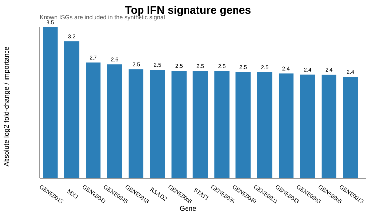

Bench to Bytes portfolio analysis report. Uses only public or synthetic data.
IFN-treated samples should be distinguishable by a compact gene signature enriched for canonical interferon-stimulated genes.
Synthetic IFN-stimulation expression matrix using canonical public ISG symbols such as MX1, IFIT1, ISG15, OAS1, STAT1, and IRF7.
data/expression_log2.csvdata/sample_metadata.csvoutputs/gene_signature_ranking.csvfigures/top_signature_genes.svgThe ranking recovers several canonical ISGs while also showing non-canonical synthetic features, matching the real-world task of separating known biology from model-suggested candidates.
